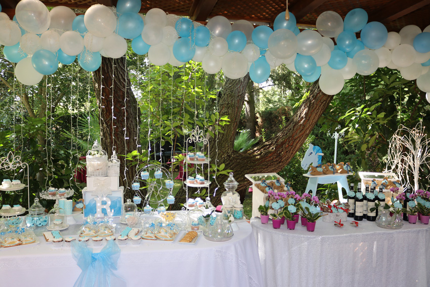
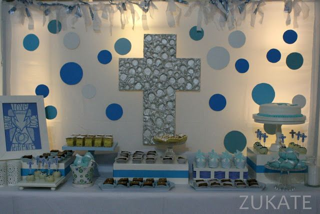
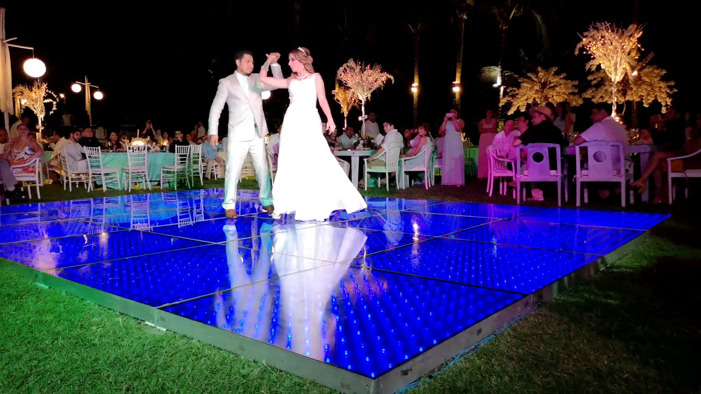

El Dj Piñata te da la bienvenida

Sobre DJ PIÑATA
Quiénes somos

DJ Piñata es un enigmático artista emergente que ha cautivado los escenarios con su estilo único y su emblemático casco metálico. Con una identidad oculta y un aura de misterio, DJ Piñata rompe las barreras de los géneros musicales convencionales, creando una experiencia sonora que trasciende cualquier categoría.
Este talentoso DJ ha dejado su huella en todo tipo de eventos, desde vibrantes fiestas hasta multitudinarios festivales, incluso ha llevado su energía contagiosa a inesperados bautizos. La versatilidad musical de DJ Piñata es asombrosa, capaz de mezclar una amplia gama de estilos y géneros para adaptarse a cualquier ocasión.
Lo más intrigante de DJ Piñata es su capacidad para encantar a personas de todas las edades. Su música es un puente que une generaciones, creando una atmósfera festiva y llena de alegría donde todos se sienten parte de algo especial. Desde los más pequeños hasta los más experimentados en el arte de la fiesta, DJ Piñata garantiza una experiencia inolvidable para todos.
Aunque nunca se ha visto su rostro, la música de DJ Piñata habla por sí misma, transmitiendo emociones y desatando una energía desbordante en cada uno de sus sets. Su pasión por la música y su habilidad para leer el ambiente hacen de cada presentación un viaje único y lleno de sorpresas.
Nuestro enfoque musical
El enfoque musical de DJ Piñata es completamente diverso y ecléctico. No se limita a un género musical específico, ya que su objetivo principal es mantener a la audiencia en constante movimiento y creando una experiencia musical única en cada evento.DJ Piñata tiene la capacidad de fusionar diferentes estilos y géneros musicales, desde música electrónica, house y techno, hasta ritmos latinos, pop, hip-hop y más. Su objetivo es crear una atmósfera enérgica y festiva, adaptándose a los gustos y preferencias del público presente.
Con su amplio conocimiento musical y su habilidad para leer y conectar con la audiencia, DJ Piñata selecciona cuidadosamente las canciones y mezclas que se ajustan al ambiente de cada fiesta, festival o evento, creando una experiencia musical inolvidable para todas las edades y gustos musicales. Ya sea en una fiesta privada, un festival multitudinario o incluso en un bautizo, DJ Piñata siempre encuentra la manera de mantener a todos en movimiento y garantizar que todos disfruten al máximo de la experiencia musical.
Nuestra pasión por las fiestas y los momentos especiales
Creemos que la música es el corazón de cualquier celebración. Una característica única que lo distingue en cada uno de sus eventos: ¡siempre rompe una piñata de dulces con su público! Este sorprendente ritual es parte integral de su show y representa la esencia festiva y lúdica que DJ Piñata transmite en cada presentación.En medio del fervor de la música y el baile, DJ Piñata invita a su audiencia a participar en esta divertida tradición. La piñata, llena de deliciosos dulces y golosinas, se convierte en el punto culminante de la fiesta. Con destreza y emoción, DJ Piñata guía a la multitud mientras todos juntos intentan romper la piñata y disfrutar de su dulce recompensa.Este acto de interacción crea un vínculo especial entre DJ Piñata y su público. Es un momento de alegría compartida y camaradería, donde las risas y la emoción se desbordan. Sin importar la edad, todos se unen en esta divertida experiencia, creando recuerdos inolvidables en cada evento de DJ Piñata.
Servicios
Nuestro DJ no solo ofrece una excelente selección musical, sino también un despliegue de iluminación y efectos visuales de vanguardia. Trabajaremos estrechamente contigo para adaptar la experiencia según las necesidades y el estilo único de tu club. Ya sea que busques una noche de house, techno, EDM o una fusión de diferentes géneros, nuestro DJ se adaptará a los gustos de tu público y creará una experiencia memorable.
No importa qué tipo de evento estés planeando, mi objetivo es hacer que sea un éxito absoluto. Mi compromiso con la excelencia y la atención meticulosa a los detalles me distinguen como DJ profesional. Puedes confiar en mí para crear la atmósfera perfecta y mantener a tus invitados entretenidos y bailando toda la noche.

Bautizos
Celebra la llegada de tu ser querido al mundo con música y alegría. Un bautizo es un momento significativo en la vida de una familia, y quiero ayudarte a que sea una experiencia especial para todos los presentes. Desde la música suave y relajante durante la ceremonia hasta los ritmos festivos durante la recepción, crearé la atmósfera perfecta para este evento tan importante. Con una cuidadosa selección de canciones y una mezcla experta, garantizo que tanto los adultos como los más pequeños disfrutarán de una tarde llena de diversión y entretenimiento. Permíteme encargarme de la música y el ambiente, para que tú puedas concentrarte en disfrutar de este hermoso momento con tus seres queridos.
Primera Comunión
Haz que este paso importante en la vida de tu hijo sea inolvidable. La primera comunión es un evento especial que combina lo sagrado y lo festivo, y estoy aquí para ayudarte a crear una atmósfera única que refleje esa dualidad. Con una amplia selección musical que abarca desde canciones religiosas hasta los éxitos más populares, adaptaré el ambiente musical a los gustos del niño y de los adultos presentes. Además, contaré con la experiencia y el tacto necesarios para animar a todos los invitados a bailar y celebrar en este día tan significativo. Trabajaré estrechamente contigo para asegurarme de que cada detalle musical se ajuste a tus preferencias y a las expectativas de tu familia. Juntos, crearemos una experiencia mágica y festiva que quedará grabada en la memoria de todos.


XV años
¡Celebra el dulce camino hacia la adultez con una fiesta llena de energía y estilo! Los XV años son una ocasión única y especial en la vida de una joven, y estoy aquí para ayudarte a crear un evento inolvidable. Con mi amplia selección de música, que abarca desde los clásicos hasta los éxitos más recientes, puedo adaptar el ambiente musical a tus gustos personales y a los de tus invitados. Desde la entrada triunfal hasta el tradicional vals, y desde los momentos emocionantes hasta la fiesta en la pista de baile, crearé el ambiente perfecto para que disfrutes al máximo de esta noche tan especial. Con mi habilidad para leer y animar a la audiencia, mantendré a todos los presentes bailando y divirtiéndose hasta altas horas de la madrugada. Permíteme ser el DJ de tu fiesta de XV años y haré que sea un evento lleno de magia y diversión.
Cumpleaños
Ya sea que cumplas 18, 30, 50 o más, mereces una celebración espectacular. El día de tu cumpleaños es una oportunidad para reunir a tus seres queridos y celebrar un año más de vida. Como tu DJ profesional, garantizo que la música y el entretenimiento estarán a la altura de la ocasión. Desde los éxitos del pasado que te traerán recuerdos hasta las canciones más populares de hoy en día, seleccionaré cuidadosamente cada canción para mantener a todos en la pista de baile y asegurarme de que cada invitado se divierta al máximo. Trabajaré contigo para crear una lista de reproducción personalizada que refleje tu estilo y tus preferencias musicales. Ya sea que prefieras una fiesta animada y enérgica o una noche más relajada y sofisticada, me aseguraré de que la música se adapte a la atmósfera que deseas crear. ¡Déjame encargarme de la música para tu cumpleaños y asegurémonos de que sea una noche inolvidable para ti y tus invitados!


Bodas
El día de tu boda es uno de los momentos más importantes de tu vida, y quiero ayudarte a que sea verdaderamente mágico. Desde la ceremonia hasta la recepción, cuidaré de todos los detalles musicales para que tú y tus invitados disfruten al máximo. Para la ceremonia, seleccionaré cuidadosamente canciones emotivas y significativas que resalten los momentos especiales. Durante el cóctel y la cena, crearé un ambiente elegante y sofisticado con música suave y agradable. Y cuando llegue el momento de la fiesta, transformaré la pista de baile en una explosión de energía y diversión, mezclando una amplia variedad de géneros y éxitos musicales para mantener a todos los invitados bailando y celebrando hasta el amanecer. Trabajaré en estrecha colaboración contigo y con otros proveedores de servicios para asegurarme de que la música fluya sin problemas y que el ambiente refleje tu estilo y tus preferencias personales.
Recintos
Ya que sabemos que encontrar un lugar es difícil, contamos con convenios especiales con una serie de recintos espectaculares en los que podrás llevar a cabo tus eventos sin preocuparte de nada más que disfrutar.
Jardín Mayita
Jardín Mayita es una fantástica alternativa de locación para realizar tu evento en Ciudad de México. Se trata de un espacio que responderá a las diferentes necesidades que harán parte de tu evento. Es tu oportunidad perfecta para hacer realidad esa celebración al aire libre que tanto anhelas y te hace suspirar. Jardín Mayita es un lugar óptimo para tu celebración, te proporcionará todo lo que necesitas para que transcurra con éxito y sea inolvidable.
- Cuenta con una capacidad para hasta 50 personas.
- Cuenta con banquete al aire libre y cóctel al aire libre
- Tiene Jardín, Terraza, Carpa, Pista de baile, Estacionamiento
- Y se encuentra localizado en Bosque de Ciruelos 278 Local 1A Ciudad de México CP: 11700

Salón IMITI
Disfruta de un espacio pensado para divertirte sin preocuparte por nada, en Plaza Exhibimex celebra tu fiesta o un evento especial, nuestras instalaciones se adaptan a lo que quieras celebrar.
- Cuenta con una capacidad para hasta 40 personas.
- Cuenta con Catering, Photo Booth, Mesas de dulces y todo tipo de snacks
- Tiene espacios de baile, estacionamiento y lugares perfectamente adaptados para tus fiestas.
- Y se encuentra localizado en Calle 10 #132, San Pedro de Los Pinos, dentro de Plaza Exhibimex


Salón Luc34
En el corazón de la Colonia Juárez, una de las joyas que engalana las calles de la Ciudad de México, en el Número 34 de la Calle de Lucerna, se encuentra Luc 34, con su bella arquitectura afrancesada propia de los tiempos de Don Porfirio, conserva el glamur y estilo refinado en su fachada, mientras que en su interior las texturas, colores y estructura, revelan los secretos que el paso del tiempo ha descubierto, brindando así en sus salones y terraza, el lugar perfecto para una bella experiencia. Ven y forma parte de la historia de esta casa, donde encontrarás no solo el lugar ideal, encontrarás también a los profesionales en producción de espectáculos que necesitas para que tu evento sea perfecto.
- Cuenta con una capacidad para hasta 400 personas.
- Tiene Jardín, Terraza, Carpa, Pista de baile, Estacionamiento y Cocina
- Y se encuentra localizado en Calle Lucerna 34, Juárez, Cuauhtémoc, 06600 Juárez, CDMX, México


Repertorio
El repertorio de nuestro DJ abarca una amplia variedad de géneros y estilos musicales. Con una cuidadosa selección de canciones, garantizamos que cada momento de tu evento estará acompañado de la música perfecta. Nuestro repertorio es bastante extenso, a continuación te mostramos algunas de las pistas más solicitadas por los asistentes:
Paquetes
Contamos con dos paquetes con precios diferentes para que puedan elegir según sus necesidades y presupuesto.

Paquete Básico:
Nuestro paquete básico ofrece una solución asequible, pero de alta calidad para su evento. Incluye los elementos esenciales necesarios para garantizar una experiencia exitosa.
- DJ profesional durante el evento.
- Equipo de sonido básico.
- Selección musical personalizada según sus preferencias.
- Duración del servicio: 5 horas ya sea viernes, sábados y domingos.
- Horarios: Los días de reservación son los viernes a partir de las 12:00 p.m. y hasta las 2:00 a.m., los sábados de 2:00 p.m. a 2:00 a.m., y los domingos de 9:00 a 14:00 horas.
- Recinto: si ya cuentas con un recinto solo nos dirigimos ahí, pero si no te invito a revisar nuestro catálogo de recintos y escoger el que más te guste y se adapte a tu presupuesto.
Precio: $2,500 pesos mexicanos
Paquete premium
Si desean un nivel superior de servicios y una experiencia más completa, nuestro paquete premium es la opción ideal. Este paquete está diseñado para aquellos que buscan una experiencia excepcional y personalizada.
- DJ profesional altamente experimentado y solicitado durante el evento.
- Equipo de sonido y luces de alta calidad y última tecnología.
- Selección musical personalizada y amplia gama de géneros.
- Duración del servicio: 5 horas ya sea viernes, sábados o domingos.
- Interacción y entretenimiento adicional con los invitados.
- Horarios: Los días de reservación son los viernes a partir de las 12:00 p.m. y hasta las 2:00 a.m., los sábados de 2:00 p.m. a 2:00 a.m., y los domingos de 9:00 a 14:00 horas.
- Recinto: si ya cuentas con un recinto solo nos dirigimos ahí, pero si no te invito a revisar nuestro catálogo de recintos y escoger el que más te guste y se adapte a tu presupuesto.
Precio: $5,000 pesos mexicanos.

No te conformes con menos en tu club o discoteca. ¡Elige a nuestro DJ y asegúrate de que tus clientes vivan una noche inolvidable llena de ritmo, energía y diversión!! Y si no tienes un lugar donde hacer tus eventos contamos con una selección de recintos preparados para llevar a cabos tus eventos.